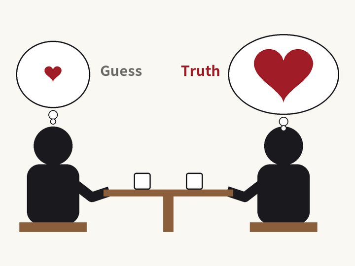
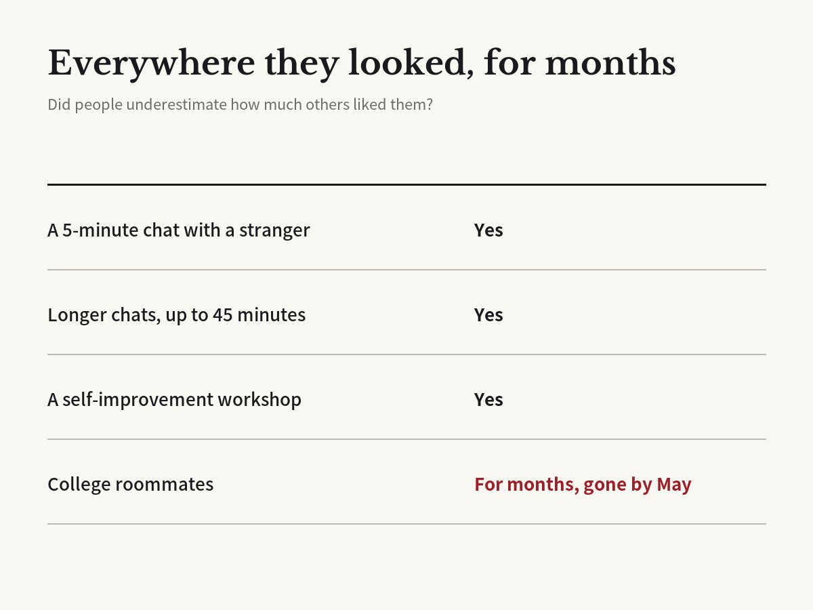

Think the conversation went badly? They probably like you more than you think
Boothby, Cooney, Sandstrom & Clark · Psychological Science, 2018

01The result
In a study published in Psychological Science in 2018, researchers from Yale, Cornell, Harvard and the University of Essex had two strangers talk for five minutes, starting with some easy questions the researchers gave them.
Afterward, each person wrote down two things: how much they liked their partner, and how much they thought their partner liked them.
On average, people guessed too low. Their partner liked them more, and enjoyed the conversation more, than they thought. The researchers named this the liking gap.

02Why it happens
After a conversation, we replay it in our heads. We worry: "I shouldn't have said that," or "Did I talk about myself too much?" People who had more negative thoughts after the talk showed a bigger gap.
Here is the interesting part. Outside observers watched videos of the conversations. Just from facial expressions and reactions, they could tell fairly well who liked whom. The signs of liking were there, but the people in the conversation missed them.
The researchers say people tend to lower their hopes to protect themselves. Trying not to be disappointed makes our guesses too gloomy.
03Not just strangers
The team confirmed the result across five studies. Even in conversations that lasted as long as 45 minutes, the gap was still there.
It also showed up outside the lab, among people meeting for the first time at a personal-development workshop.
The most striking study followed first-year college students who lived in the same dorm. The gap lasted for months. Even though they saw each other every day, people underestimated how much their dorm mates liked them. It was gone only in the May survey at the end of the school year.
04Later research
The gap does not stop at pairs. In 2021, some of the same researchers looked at groups. In small group conversations and in engineering student teams working on a project together, people underestimated how much their teammates liked them.
A study of working adults found the gap may also affect how well teams work together. It was largest among peers, rather than between bosses and staff. People who dwelled more on the bad parts of the impression they made showed a bigger gap.
When does it start? The same year, researchers in Germany and the US studied 241 American children aged 4 to 11. The gap first appeared around age 5 and grew with age. The explanation: as children grow, they worry more about how others see them.
05What it means
The researchers say this gap can get in the way of new relationships. If you believe someone didn't like you, you may hesitate to reach out again or suggest meeting up.
A new school, a new job, a first date: we all have days when we think a conversation went badly. The other person probably thinks better of it, and of you, than you do.
Reaching out one more time may be less risky than it feels.
06Limitations
This is an average. It does not mean that everyone likes you after every conversation.
Most participants were students and adults in the US and the UK. It is not yet clear if the gap is the same size in other cultures.
The original paper did not directly test situations with something at stake, like job interviews or performance reviews.
Corrections
- We removed a paragraph claiming, without support, that the other person is busy replaying their own words. The dorm study described students in the same dorm, not the same room, and the gap was gone in the May survey at the end of the year. We also removed 'team meetings' from what the original paper did not test, since a 2021 follow-up studied teams. The English version no longer says the team was led by Yale.
Original paper
- Boothby et al. (2018), Psychological Science, doi:10.1177/0956797618783714
- doi.org/10.1177/0956797618783714